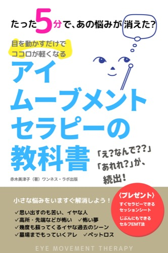
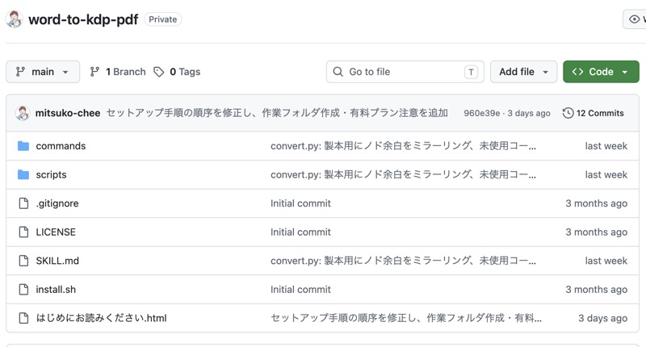

Type2.3.4
こんな方に
頼めること
01販売中
PNG連番やWord原稿を、KDP入稿用のPDF・EPUB・表紙まで整えます。
実例
KDP表紙自動生成ツール — ページ数・判型・印刷方式から背幅・塗り足し・バーコード配置を自動計算
AI漫画PNG→KDPペーパーバックPDF変換ツール — 画像ページをペーパーバック用PDFに整える
Word原稿→KDP PDF変換ツール — Word原稿をペーパーバック用PDFに整える
EPUBエディタ — ブラウザでEPUBをプレビューしながら編集・再出力
AI漫画PNG→EPUB変換ツール — 画像ページを固定レイアウトEPUBに整える
02配布中
表示崩れの原因になる書式指定を見つけて除去します。
実例
Kindle原稿クリーナー — Word原稿の内部XMLを直接解析し、表示崩れの原因になる書式指定だけを除去
03個別開発
Web診断からLINE誘導までの導線や、提案資料の自動生成。内容に応じて一緒に組み立てます。
実例
診断ファネル（エニアグラム本能サブタイプ） — Web診断から結果表示、LINE公式アカウントへの導線までを一気通貫で構築
MCPサーバー自作 — LINE公式アカウント連携用のバックエンドをCloudflare Workersに構築・運用
UTAGE構築・運用実績 — 講座・個人セッション事業者向けにファネルを構築
04販売中
自著・出版サポートに欠かせません。新刊発売直後の順位変移・ベストセラー表示・レビュー数を自動で観察し、スクリーンショットで記録します。睡眠時間を確保！
Ranking Watcher — 新刊発売直後の見張りと証拠保存に特化したKindle著者向けローカルツール
進め方
今の状況やお困りごとをうかがいます。
対応できる範囲と進め方を一緒に決めます。
原稿整形やツール構築など、内容に応じて進めます。
出来上がったものを確認しながら、必要な調整をします。
実績
AI漫画とエニアグラム出版の実績に、デザインと自動化の実務を重ねています。
作品と講座
出版作品はAmazonで、講座はUdemyで確認できます。相談内容に近い制作実績を見ながら、必要な形を一緒に整理できます。
Type2.3.4

Type5.6.7

Type8.9.1

漫画で読むエニアグラム入門

エニアグラム実践編

In manga Enneagram Intro

アイムーブメントセラピー
自作ツール
出版・入稿まわりで繰り返し発生する面倒な作業を、自分で使うために自作してきました。同じ工程を、ご相談内容に合わせて代わりに進めることもできます。

出版・入稿 / one-pub.net
ページ数・判型・印刷方式から背幅・塗り足し・バーコード配置を自動計算し、入稿用PNGを出力。

出版・入稿 / 自作ツール
AI漫画の画像ページを、KDPペーパーバック用PDFに整えるためのツール。

出版・入稿 / 自作ツール
Word原稿をAmazon KDPペーパーバック用PDFに整えるためのツール。

出版・入稿 / one-pub.net
Word原稿の内部XMLを直接解析し、Kindleで表示崩れの原因になる書式指定だけを狙って除去。

EPUB編集 / 自作ツール
EPUBをブラウザにドラッグ&ドロップし、プレビューしながらXHTMLを編集・検証・再出力。インストール不要。

EPUB編集 / 自作ツール
画像ページを固定レイアウトEPUBに整えるためのツール。

販売中 / Brain
新刊発売直後の見張りと証拠保存に特化した、Kindle著者向けローカルツール。順位とベストセラーを、あとから確認できる形で残す。著者さんの睡眠時間を確保。

診断導線 / one-pub.net
Web診断から結果表示、LINE公式アカウントへの導線までを一気通貫で構築。
PROFILE
ベストセラー作家 / AIマンガクリエイター

大阪府茨木市出身、兵庫県宝塚市在住。若い頃から人の性格に興味があり、漫画も模写していました。エリクソン催眠講座やアニマルコミュニケーション講座を主催し、その先でエニアグラムに出会いました。それがデザイン35年、エニアグラム16年、AI漫画とKindle出版の制作支援につながっています。ニッチで説明しづらい困りごとを、道具と手順に落とし込むのが得意です。
CONTACT
作品を作る、PDFにする、KDPへ入稿する。詰まりやすい工程を整理し、動く形にします。